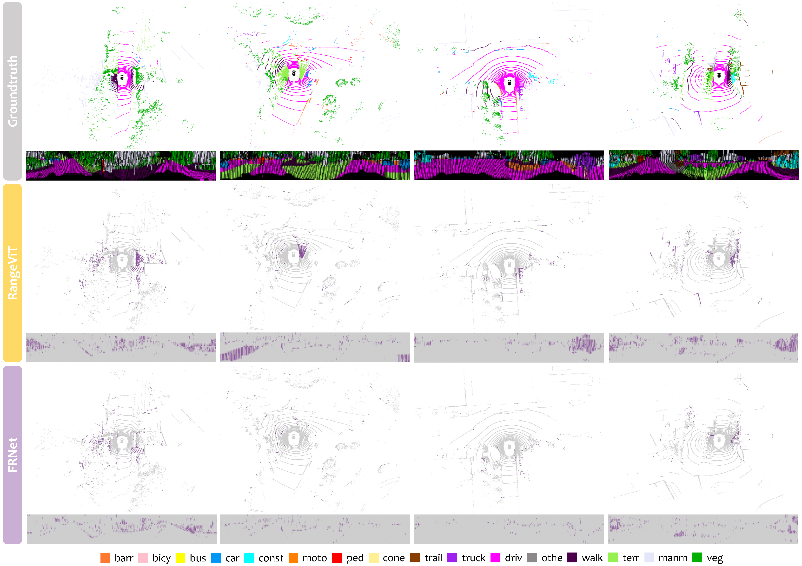
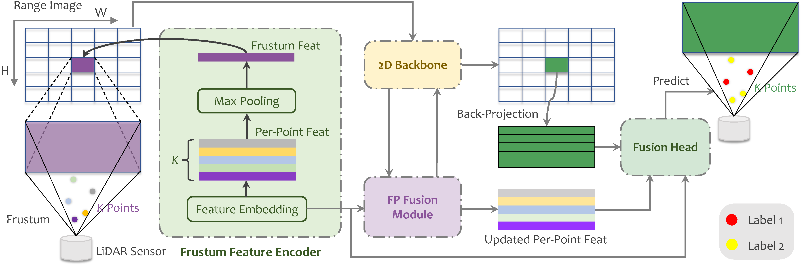

SemanticKITTI

nuScenes

LiDAR segmentation is crucial for autonomous driving systems. The recent range-view approaches are promising for real-time processing. However, they suffer inevitably from corrupted contextual information and rely heavily on post-processing techniques for prediction refinement. In this work, we propose a simple yet powerful FRNet that restores the contextual information of the range image pixels with corresponding frustum LiDAR points. Firstly, a frustum feature encoder module is used to extract per-point features within the frustum region, which preserves scene consistency and is crucial for point-level predictions. Next, a frustum-point fusion module is introduced to update per-point features hierarchically, which enables each point to extract more surrounding information via the frustum features. Finally, a head fusion module is used to fuse features at different levels for final semantic prediction. Extensive experiments on four popular LiDAR segmentation benchmarks under various task setups demonstrate our superiority. FRNet achieves competitive performance while maintaining high efficiency. The code is publicly available.

FRNet comprises three main components: 1) Frustum Feature Encoder is used to embed per-point features in the frustum region. 2) Frustum-Point Fusion Module is used to update per-point features hierarchically at each stage of the 2D backbone. 3) Fusion Head fuses different levels of features to predict final results.
We show more qualitative results among state-of-the-art LiDAR segmentation methods.
